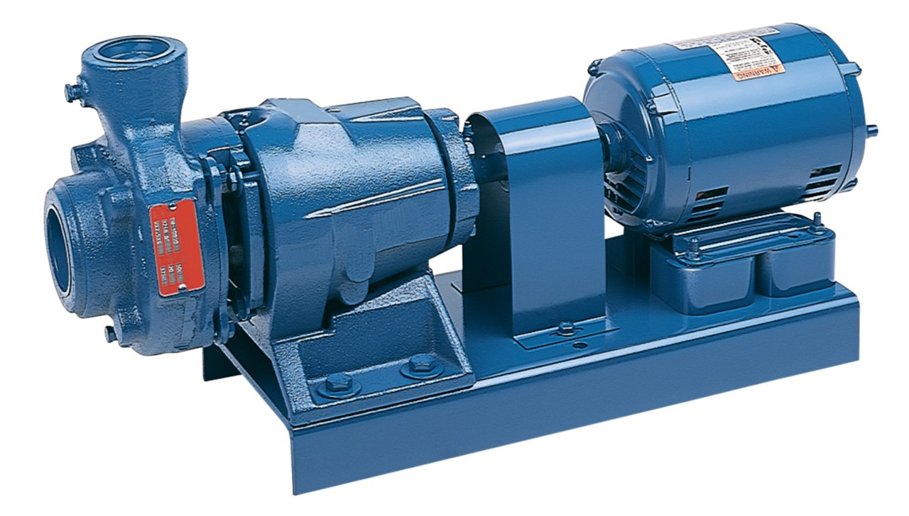

- Not suitable for very high pressure
- Can lose prime if air enters the system
- Efficiency drops with thick or dirty fluids
- Requires proper alignment to avoid vibration
- Limited flow capacity compared to larger pump types